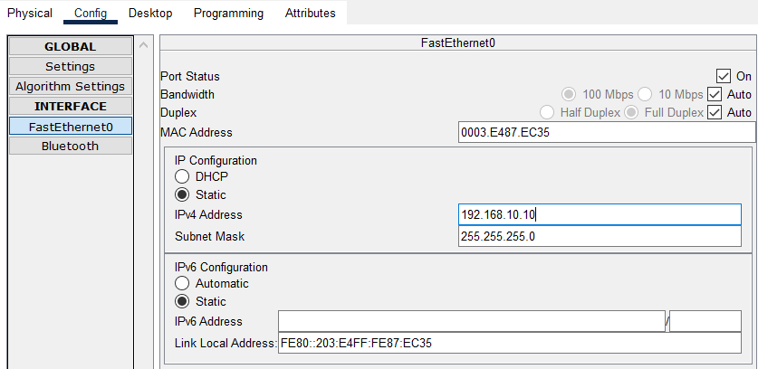

Configuración de la Red
En esta página explico paso a paso cómo se configura toda la red en Packet Tracer.
Creación de las VLANs
Lo primero que se realiza son las 4 VLANs en el switch de capa 3. Las VLANs sirven para segmentar la red, es decir, dividirla en partes más pequeñas y organizadas.
Switch> enable
Switch# configure terminal
Switch(config)# hostname SwitchCapa3
! VLAN 10 para los ordenadores
SwitchCapa3(config)# vlan 10
SwitchCapa3(config-vlan)# name Ordenadores
SwitchCapa3(config-vlan)# exit
! VLAN 20 para las impresoras
SwitchCapa3(config)# vlan 20
SwitchCapa3(config-vlan)# name Impresoras
SwitchCapa3(config-vlan)# exit
! VLAN 30 para el WiFi
SwitchCapa3(config)# vlan 30
SwitchCapa3(config-vlan)# name WiFi
SwitchCapa3(config-vlan)# exit
! VLAN 40 para el router
SwitchCapa3(config)# vlan 40
SwitchCapa3(config-vlan)# name Router
SwitchCapa3(config-vlan)# exit
Nota
Todo esto se realiza desde la consola CLI del switch en Packet Tracer. Ponemos la vlan que queremos crear, y le daremos un nombre.
Asignación de IPs a las VLANs
Una vez creadas las VLANs, hay que asignarles direcciones IP. Esto se hace creando interfaces virtuales (SVI) que actúan como "gateways" o puertas de enlace para cada VLAN.
! Primero hay que activar el enrutamiento IP
SwitchCapa3(config)# ip routing
! Gateway para VLAN 10 (Ordenadores)
SwitchCapa3(config)# interface vlan 10
SwitchCapa3(config-if)# ip address 192.168.10.1 255.255.255.0
SwitchCapa3(config-if)# no shutdown
SwitchCapa3(config-if)# exit
! Gateway para VLAN 20 (Impresoras)
SwitchCapa3(config)# interface vlan 20
SwitchCapa3(config-if)# ip address 192.168.20.1 255.255.255.0
SwitchCapa3(config-if)# no shutdown
SwitchCapa3(config-if)# exit
! Gateway para VLAN 30 (WiFi)
SwitchCapa3(config)# interface vlan 30
SwitchCapa3(config-if)# ip address 192.168.30.1 255.255.255.0
SwitchCapa3(config-if)# no shutdown
SwitchCapa3(config-if)# exit
! Gateway para VLAN 40 (Router)
SwitchCapa3(config)# interface vlan 40
SwitchCapa3(config-if)# ip address 192.168.40.1 255.255.255.0
SwitchCapa3(config-if)# no shutdown
SwitchCapa3(config-if)# exit
Comandos básicos
interface vlan 40 selecciona la VLAN, ip address asigna la IP, no shutdown la activa, y exit sale.
Configuración de los Puertos del Switch
Ahora toca asignar cada puerto físico del switch a su VLAN correspondiente. Para saber qué puertos usar, en Packet Tracer dejando el ratón encima del switch, sale una lista con todos los puertos ocupados. (cuadro descriptivo).
Puertos para los PCs (VLAN 10)
Los 11 PCs están conectados desde el puerto Fa0/1 hasta el Fa0/11:
SwitchCapa3(config)# interface range fastEthernet 0/1-11
SwitchCapa3(config-if-range)# switchport mode access
SwitchCapa3(config-if-range)# switchport access vlan 10
SwitchCapa3(config-if-range)# no shutdown
SwitchCapa3(config-if-range)# exit
Puertos para las Impresoras (VLAN 20)
Las 3 impresoras están en los puertos Fa0/12, Fa0/13 y Fa0/14:
SwitchCapa3(config)# interface range fastEthernet 0/12-14
SwitchCapa3(config-if-range)# switchport mode access
SwitchCapa3(config-if-range)# switchport access vlan 20
SwitchCapa3(config-if-range)# no shutdown
SwitchCapa3(config-if-range)# exit
Puerto para el Access Point (VLAN 30)
El AP está conectado al puerto Fa0/15:
SwitchCapa3(config)# interface fastEthernet 0/15
SwitchCapa3(config-if)# switchport mode access
SwitchCapa3(config-if)# switchport access vlan 30
SwitchCapa3(config-if)# no shutdown
SwitchCapa3(config-if)# exit
Puerto para el Router (VLAN 40)
El router está en el puerto GigabitEthernet 0/1:
SwitchCapa3(config)# interface gigabitEthernet 0/1
SwitchCapa3(config-if)# switchport mode access
SwitchCapa3(config-if)# switchport access vlan 40
SwitchCapa3(config-if)# no shutdown
SwitchCapa3(config-if)# exit
Configuración de puerto
Se selecciona el puerto con interface, se pone en modo access, se asigna a la VLAN 30, se activa con no shutdown y se sale.
Configuración del Router
El router lo configuré con la IP 192.168.40.10 en la interfaz que va conectada al switch:
Router> enable
Router# configure terminal
Router(config)# hostname RouterPrincipal
RouterPrincipal(config)# interface gigabitEthernet 0/1
RouterPrincipal(config-if)# ip address 192.168.40.10 255.255.255.0
RouterPrincipal(config-if)# no shutdown
RouterPrincipal(config-if)# exit
! Ruta para que el router sepa dónde están las demás redes
RouterPrincipal(config)# ip route 192.168.0.0 255.255.0.0 192.168.40.1
RouterPrincipal(config)# exit
RouterPrincipal# write memory
Esta ruta hace que el router sepa que todas las redes 192.168.x.x están detrás del switch (192.168.40.1).
Configuración de los PCs
Todos los PCs se configuraron con IP estática (fija). Aquí un ejemplo con el PC0:
- IP: 192.168.10.10
- Máscara: 255.255.255.0
- Gateway: 192.168.10.1
Y así sucesivamente hasta el PC10 con la IP 192.168.10.20.

IPs de los PCs
- PC0: 192.168.10.10
- PC1: 192.168.10.11
- PC2: 192.168.10.12
- ...
- PC10: 192.168.10.20
Configuración de las Impresoras
Las impresoras también tienen IP fija:
| Impresora | IP | Gateway | Máscara |
|---|---|---|---|
| Impresora 0 | 192.168.20.10 | 192.168.20.1 | 255.255.255.0 |
| Impresora 1 | 192.168.20.11 | 192.168.20.1 | 255.255.255.0 |
| Impresora 2 | 192.168.20.12 | 192.168.20.1 | 255.255.255.0 |
Esto es importante porque así los PCs pueden encontrar las impresoras siempre en la misma dirección.
Configuración del Access Point
El AP se configura desde la pestaña Config del AP en Packet Tracer:
En el Puerto 1: - SSID: wifi - Tipo de seguridad: WPA2-PSK - Contraseña: prueba1234

Configuración de los Portátiles
Los portátiles primero hay que conectarlos al WiFi y luego asignarles IP estática:
Paso 1: Conectar al WiFi
- En el portátil, ir a Desktop → PC Wireless
- Darle a Refresh → aparece el SSID "wifi"
- Conectar e introducir la contraseña: prueba1234
Paso 2: Configurar la IP
En la pestaña Config → Interface Wireless0:
| Portátil | IP | Gateway | Máscara |
|---|---|---|---|
| Laptop 0 | 192.168.30.10 | 192.168.30.1 | 255.255.255.0 |
| Laptop 1 | 192.168.30.11 | 192.168.30.1 | 255.255.255.0 |
| Laptop 2 | 192.168.30.12 | 192.168.30.1 | 255.255.255.0 |
Importante
Primero hay que conectar al WiFi y luego configurar la IP. Si lo haces al revés no funciona.
Tabla Resumen de Direccionamiento
Es importante tener una tabla de IPs de esta manera llevar un mantenimiento será mas sencillo:
| Dispositivo | VLAN | IP | Máscara | Gateway | Puertos Switch |
|---|---|---|---|---|---|
| PCs (11) | 10 | 192.168.10.10-20 | 255.255.255.0 | 192.168.10.1 | Fa0/1 - Fa0/11 |
| Impresoras (3) | 20 | 192.168.20.10-12 | 255.255.255.0 | 192.168.20.1 | Fa0/12 - Fa0/14 |
| Portátiles (3) | 30 | 192.168.30.10-12 | 255.255.255.0 | 192.168.30.1 | (WiFi) |
| Access Point | 30 | - | - | - | Fa0/15 |
| Router | 40 | 192.168.40.10 | 255.255.255.0 | 192.168.40.1 | Gi0/1 |
| Switch (SVI) | - | 192.168.x.1 | 255.255.255.0 | - | - |
Verificación Básica
Para comprobar que todo esta bien configurado, se usará estos comandos:
Ver las VLANs creadas
Este comando permite mostrar todas las VLANs y puertos que estén asignados.
Ver las IPs del switch
Con este comando se puede ver que las interfaces VLAN 10, 20, 30 y 40 estaban "up" (funcionando).
¡Configuración completada!
Con esto ya tendríamos toda la red montada. Lo siguiente será configurar la seguridad y hacer pruebas para ver que todo funcione correctamente.
Siguiente: Seguridad y ACLs →